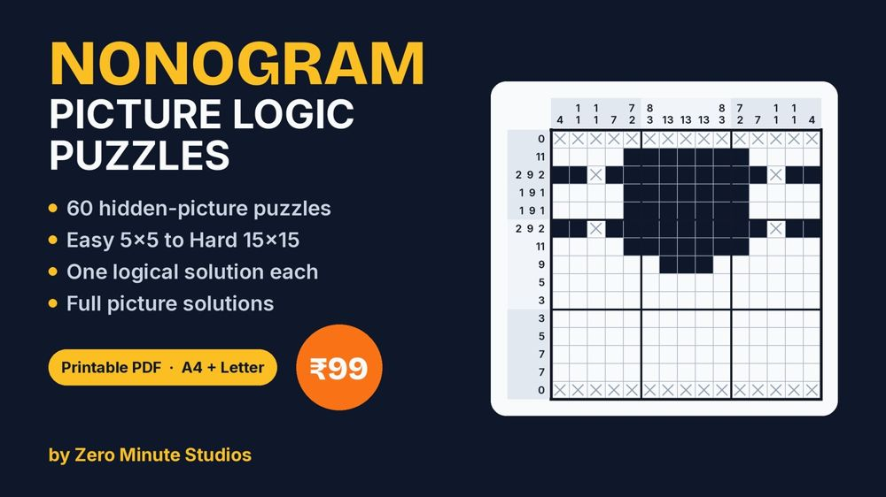
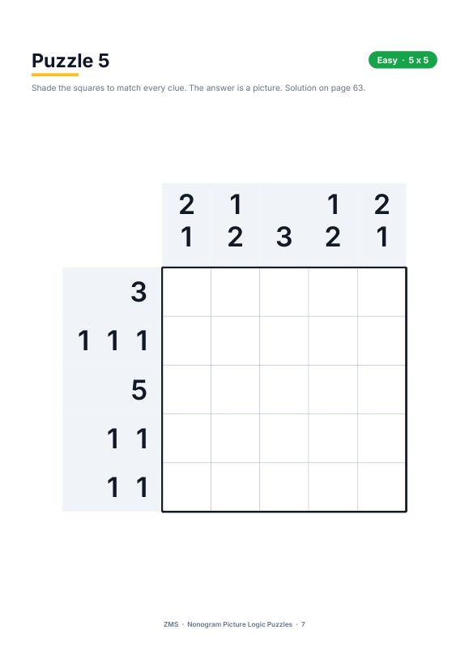
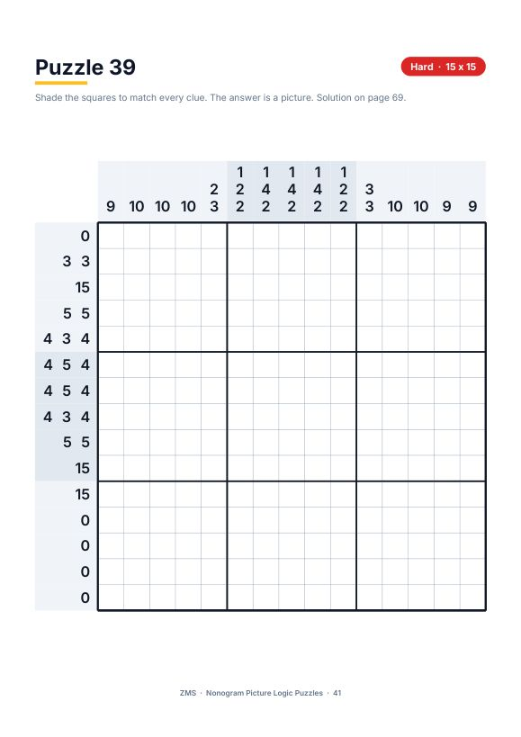

Nonogram Picture Logic Puzzles: 60 Printable Puzzles

Shade the squares using the number clues and a hidden picture appears. Nonograms (also called picross or griddlers) are pure logic: no guessing, no maths, just deduction.
- 60 hidden-picture puzzles, from easy 5x5 to hard 15x15 grids
- Every puzzle checked by computer: exactly one solution, reachable by logic alone
- A how-to-play guide with a worked mini example
- Full picture solutions for all 60 puzzles
- Instant PDF (72 pages), prints on A4 or US Letter
Preview


FAQ
What is a nonogram? A logic puzzle where number clues tell you which squares to shade; the finished grid is a picture.
Do I need to guess? No. Each puzzle was verified to have one logical solution.
How do I get it? Instantly after payment, as a PDF.
We don't do refund & return ✌️